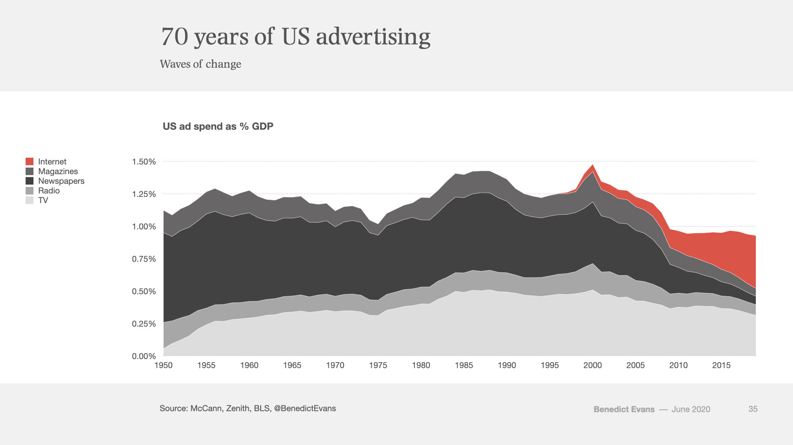

Google News Recommendation System Redesign
A cognitive approach that integrates reader agency and serendipity to redesign Google's News Recommendation System, an algorithm that tends to foster polarization through filter bubbles.
MA Instructional Technology & Media
Problem
The rise of the Internet age has brought about the decline of traditional, printed news while digital news becomes increasingly popular. Many underrepresented communities are receiving local news online from organizations financed by advertisements, institutions, and individual donors.
Background
The number of local newsrooms in the U.S. has plummeted in recent years, drawing large concern over the state of democracy as large swaths of 'news deserts' emerge. The apprehension is based on the fact that previous research has indicated that local news is particularly important in stimulating civic engagement, holding governments accountable, and providing alternative opinions that counter the effects of polarization (American Journalism Project). To put it in perspective, 1,800 communities have lost their local newsroom since 2004 (UNC).
Background
A great deal of these closures can likely be attributed to the significant loss of advertising and subscription revenue streams. Most of the local print newspapers’ revenue stemmed from advertising and subscriptions, but the revenue of advertising, for example, has dropped by 80% (American Journalism Project).
Dataset
Nearly nine out of ten Americans currently obtain some local news digitally (Pew Research ). The tendency to read local news on social media is even higher for younger readers and in communities where there is a higher proportion of Hispanic and Black residents (Pew Research ). There is an emerging demand that needs to be met as more Americans, particularly in communities that are underrepresented, seek out local news digitally. The question is, how are these digital local news organizations that purposefully seek to serve these communities succeed during a declining trend of local news?
The following analysis focuses on the combination of the prevalence of Americans consuming local news digitally and the higher proportion of Hispanic and Black residents reading the news via social media. The data analyzed was extracted from a larger dataset on all local news organizations. The subsequent graphs are based on a subset of data on digital local news organizations that serve underrepresented communities.
Methodology
All graphs below were originally pulled from the following dataset: Project News Oasis
GitHub Process: GitHub Documentation
Data Analysis
The dataset contained 98 digital local news organizations serving underrepresented communities. All of them relied on advertising as a main source of revenue, but it was often supplemented by institutional funding and individual gifts. The graph depicts how the digital distribution methods are funded by these main revenue streams. The three most common methods are websites, social media, and third party content platforms

Data Analysis
When organizations were asked to identify their largest source of revenue, philanthropic funding from foundations, major institutions, and individuals play a large role. Advertising is still a large source of revenue, but philanthropy heavily contributes to the digital local news ecosystem.

Data Analysis
As seen in the graph, digital local news organizations serving underrepresented populations were sparse in the last couple decades of the 20th century (or they didn’t survive), but in the past fifteen years there has been a significant uptick of digital local news organizations. Most of the earlier founded organizations still rely on advertisements for their largest source of revenue. While that holds true for some of the recently founded organizations, there is also an increased reliance on philanthropy: foundation, grants, and corporations.

Academia
Parallel to the rise of digital news, a new research field has emerged in academia as researchers attempt comprehend the complexities of how social media news is altering the fabric of society. Research is being conducted on how social media is expanding access to information and utilized for political activism, but also on the lack of media literacy, the spread of misinformation, and the exacerbation of polarization.
The following papers are examples of academic research conducted on digital news
Google News Recommendation System Redesign
A cognitive approach that integrates reader agency and serendipity to redesign Google's News Recommendation System, an algorithm that tends to foster polarization through filter bubbles.
TikTok Microaggressions Against Asians
A qualitative analysis of comments on TikTok videos addressing microaggressiosn against Asian Americans.
Surveillance in Social Media Activism Research
An appeal to incorporate surveillance in social media activism research through the lens of a case study on K-pop activism during BLM.
Academia & Digital News
Youtube Web Scraping Comments
Currently in progress. The goal is to create a web scraper tool based on the a small sample use case of the Women and Men's World Cup comments when the U.S. team was knocked out. Once collected, the comments would be processed through a text sentiment analysis to determine the level of sexism and nationalism.
Educational Curriculum on Misinformation on Social Media
TBD: Application of instructional design to help social media users engage effectively with the news on digital platforms.
Data Literacy and Games
TBD: Using games to educate readers on how to understand data visuals in the news.